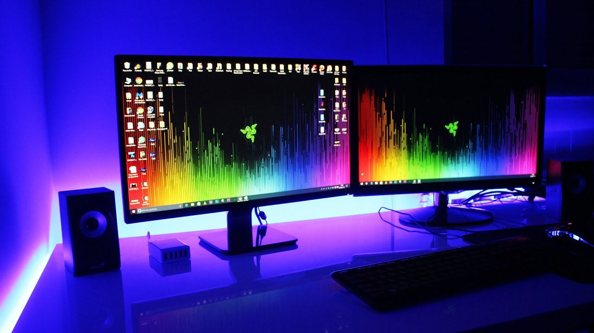
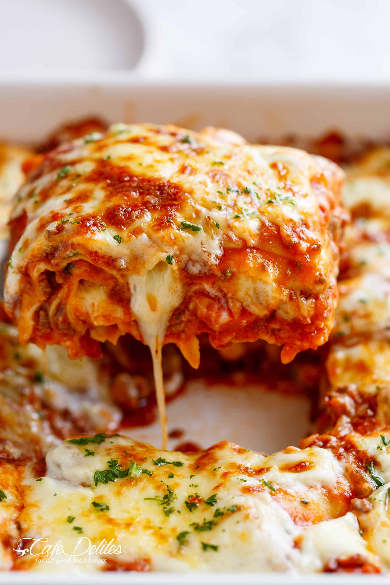

Video games are my favorite thing to do whenever I have free time. They are really fun because each game poses a different challenge. Some games have a story line and plot, so the challenge for those would be to complete the story line. Other games can be online, where the game starts and you have to battle other players from around the world.
Golf is one of my favorite hobbies because it is a fun sport to play and I get to play for free because I am on the varsity golf team. I play golf every day after school and whenever we have a match. Sometimes we have tournaments which last all day and I get to miss school for them, and always at tournaments we get food afterward.

Eating is very important to me. I love food so much, I could eat all day and never get full. My favorite foods are tacos, ramen, lasagna, vodka rigatoni, pizza, hummus, and filet mignon. In addition to eating all day, I also love drinks. The drinks I love the most are coconut water, Inca Cola, chocolate milk, iced tea, iced coffee, and apple juice.
